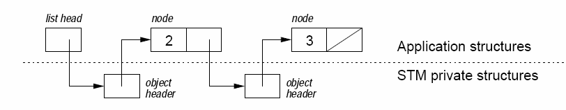

Linked List
typedef struct { int key; ostm_handle<node*> *next; } node;
typedef struct { ostm_handle<node*> *head; } list;

void list_insert (list *l, int k)
{
node *n := new node(k);
ostm_handle<node*> := new ostm_handle(n);
do {
ostm_transaction *tx := OSTMStartTransaction();
ostm_handle<node*> *prev_obj := l->head;
node *prev := OSTMOpenForReading(tx, prev_obj);
ostm_handle<node*> *curr_obj := prev->next;
node *curr := OSTMOpenForReading(tx, curr_obj);
while (curr->key < k ) {
prev_obj := curr_obj;
prev := curr;
curr_obj := prev->next;
curr := OSTMOpenForReading(tx, curr_obj);
}
n->next := curr_obj;
prev := OSTMOpenForWriting(tx, prev_obj);
prev->next := n;
} while ( !OSTMCommitTransaction(tx) );
}